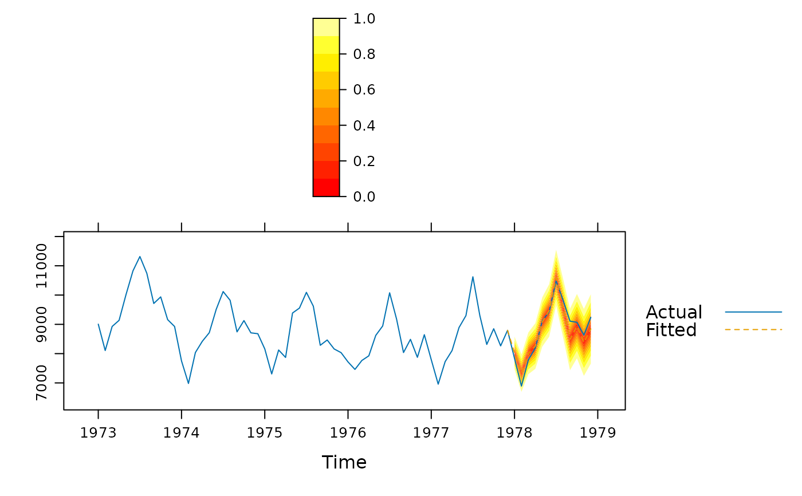

Plot forecasts from forecast::forecast(). It is built mostly to resemble
the forecast::autoplot.forecast() and forecast::plot.forecast()
functions, but in addition tries to plot the predictions on the original
scale.
Usage
# S3 method for class 'forecast'
xyplot(
x,
data = NULL,
ci = TRUE,
ci_levels = x$level,
ci_key = ci,
ci_pal = hcl(0, 0, 45:100),
ci_alpha = trellis.par.get("regions")$alpha,
...
)Arguments
- x
An object of class
forecast.- data
Data of observations left out of the model fit, usually "future" observations.
- ci
Plot confidence intervals for the predictions.
- ci_levels
The prediction levels to plot as a subset of those forecasted in
x.- ci_key
Set to
TRUEto draw a key automatically or provide a list (iflength(ci_levels)> 5 should work withlattice::draw.colorkey()and otherwise withlattice::draw.key())- ci_pal
Color palette for the confidence bands.
- ci_alpha
Fill alpha for the confidence interval.
- ...
Arguments passed on to
lattice::panel.xyplot().
Value
An object of class "trellis". The
update method can be used to
update components of the object and the
print method (usually called by
default) will plot it on an appropriate plotting device.
Examples
if (require(forecast)) {
train <- window(USAccDeaths, c(1973, 1), c(1977, 12))
test <- window(USAccDeaths, c(1978, 1), c(1978, 12))
fit <- arima(train, order = c(0, 1, 1),
seasonal = list(order = c(0, 1, 1)))
fcast1 <- forecast(fit, 12)
xyplot(fcast1, test, grid = TRUE, auto.key = list(corner = c(0, 0.99)),
ci_key = list(title = "PI Level"))
# A fan plot
fcast2 <- forecast(fit, 12, level = seq(0, 95, 10))
xyplot(fcast2, test, ci_pal = heat.colors(100))
}
#> Loading required package: forecast
